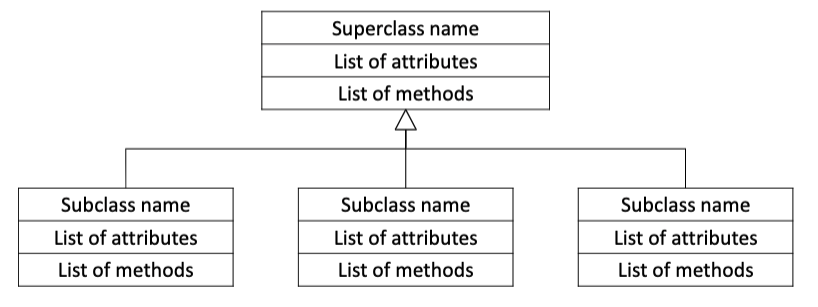

Procedural Programming
Out1, out2 = foo(in1, in2)foo needs more inputs/outputs in the future?foo objectsObject-Oriented Programming
Benefits of OO Programming
Solves problems associated with separating data and code
Classes – code that specifies attributes and methods for a particular object type
Set of statements that define the methods and data attributes of a class
self parameter – required in every method! References the specific object that method should operate on
class ClassName: # Initializer method # Automatically executed when an object of this class is created def__init__(self): # Initializes data attributes of the object just created self.attribute = value def method_name(self): statement(s) def method_name(self): statement(s)
Creating Object from a file class.py
import class # Lets Python “see” the .py with class definition def main(): # Calls __init__method to create an object of the class object_name = class.Class() # Accesses public attributes of an object print(object_name.attribute) # Calls method of an object var_name = object_name.method(arguments(s)) main()
Data hiding – ability of an object to hide attributes from external code
Python syntax:
def __init__(self): # Double underscore makes attribute private (cannot be accessed outside of the class) self.__attribute = value
Example:
# Define class in circle.py class Circle: def__init__(self): self.__radius= 1.0 self.border= 2.0 self.color= 'black' # in main.py import circle def main(): my_circ = circle.Circle() print(my_circ.border) # public print(my_circ.radius) # private, therefore fails print(my_circ.color) # public main()
If we hide the data attributes in an object, how does external code access them?
Accessors – used to retrieve data attribute values from an object
def get_attribute(self): return self.__attribute
Mutators – used to change data attribute values in an object
def set_attribute(self, value): self.__attribute = value
__str__()MethodHow do we use the __str__() method?
__str__() method will be calledimport class def main(): my_object = class.Class() print(my_object) # Implicitly calls __str__()from Class main()
How do we create multiple objects using a class?
import class def main(): # Each object has its own set of attributes object_name1 = class.Class() object_name2 = class.Class() print(object_name1) print(object_name2) main()
Can we pass an object as an argument to a function?
Generalization versus specialization
In reality, many objects are specialized versions of more general objects
Inheritance
Superclass - the general class (aka the parent)
Subclass – the specialized class (aka the child)

# in superslass.py class Superclass: def __init__(self, params): self.__attribute = param def method_name(self): statement(s) def method_name(self): statement(s) # in subclass.py import superclass class Subclass(superclass.Superclass): # Indicates inheritance def __init__(self, params): # Calls __init__method to create attributes of superclass super().__init__(params) # Creates attribute(s) specific to subclass self.__attribute= value # Method(s) specific to subclass def method_name(self): statement(s) def method_name(self): statement(s)
__iter__() and __next__(), collectively called the iterator protocol.iter() function (which in turn calls the __iter__() method) returns an iterator from them.# mytuple = ("apple", "banana", "cherry") # calls __iter__() myit = iter(mytuple) print(next(myit)) print(next(myit)) print(next(myit))
Print-out
apple
banana
cherry
__iter__() and __next__() methodStopIteration when there was no values to be returned etc.Example 1:
# A simple generator function def MyGen(): n = 1 print('This is printed first') # Generator function contains yield statements yield 1 n += 2 print('This is printed second') yield n n += 2 print('This is printed at last') yield n n = MyGen() print(n) print(next(n)) print(next(n)) print(next(n))
Print-out
<generator object MyGen at 0x0000023553CCA5C8>
This is printed first
1
This is printed second
3
This is printed at last
5
Example 2:
def foo_with_yield(): yield 1 yield 2 yield 3 x = foo_with_yield() print(x) print(next(x)) print(x) print(next(x)) print(x) print(next(x))
Print-out
<generator object foo_with_yield at 0x0000023553CCA1C8>
1
<generator object foo_with_yield at 0x0000023553CCA1C8>
2
<generator object foo_with_yield at 0x0000023553CCA1C8>
3